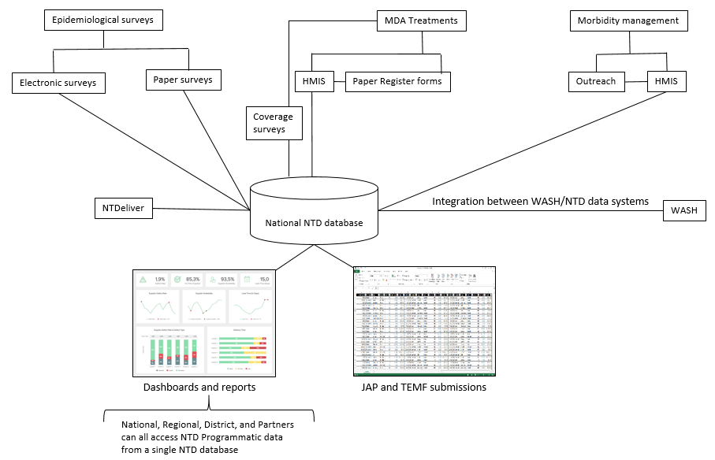
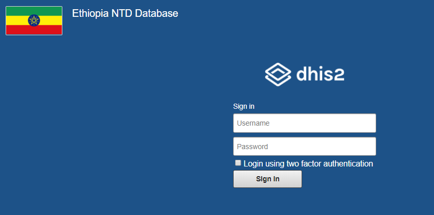
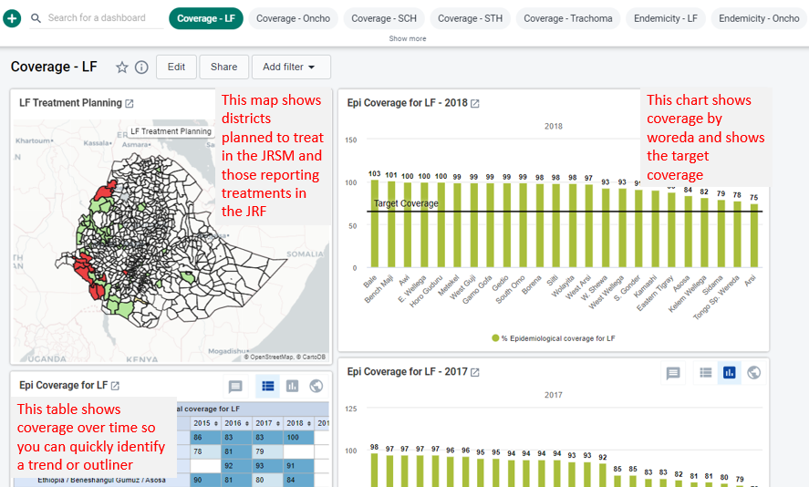
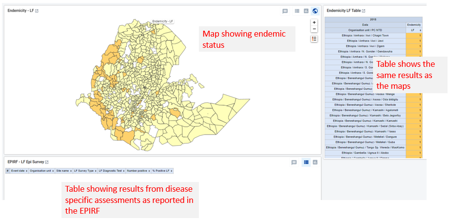
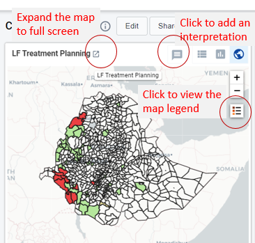

User Guide
Introduction
What is the NTD DHIS2 database?!
The NTD DHIS2 database is a national NTD database that can be accessed by authorized Ministry of Health users and Partners by going to https://ethiopia.integratedntddb.org/. The NTD DHIS2 database uses DHIS2 (https://www.dhis2.org/) software as a data warehouse that integrates with external systems to provide one single source for all NTD programmatic data (Image 1). Under this model, no data is entered into the NTD DHIS2 database directly, rather, the data come from integrations with a wide range of external systems. Such as:
Epidemiological surveys - Tropical Data, ESPEN Collect, EPHI
MDA Treatments - HMIS indicators
Stock - PFSA?
Morbidity management - HMIS indicators
Drug procurement tracking - NTDeliver
WASH - mWater

NTD DHIS2 database vs HMIS?
The national Health Management Information System (HMIS) is a data collection system designed to collect key health indicators from health facilities across the country on a wide range of health conditionals in order to support planning, management, and decision-making.
The NTD DHIS2 database is a data warehouse that connects to a wide range of external databases to create a single data repository of all NTD programmatic data in Ethiopia. Some data, such as the routine reporting of MDA treatments and morbidity management come through HMIS facility-based reporting. Other data, such as the event data associated with epidemiological surveys, comes through integration with global systems, such as Tropical Data, or through national systems, such as electronic data collection tools implemented by the Ethiopia Public Health Institute (EPHI). All together, these NTD data allow the NTD program to plan, manage, and report on NTD control and elimination programming.
Note
To learn more about the DHIS2 data model click here.
Getting started
How do I request an account?
To request access to the NTD DHIS2 database you will need to submit your request to the FMOH DHIS2 administrator by email to tsede171@gmail.com. Your request should include the following information: Name, Phone number with country code, Email address, Organization name
How do I access the NTD DHIS2 database?
The NTD DHIS2 database can be accessed using your web browser by going to here and logging in with your assigned username and password. The level of access within the system is granted to you by the NTD DHIS2 administrator.

What data are included in the NTD DHIS2 database?
The NTD DHIS2 database includes the following data at district level:
Endemicity data for the five PC-NTDs
2015, 2016, 2017, 2018, 2019
MDA treatment data for the five PC-NTDs
2015, 2016, 2017, 2018, 2019
National figures for morbidity management treatment data for LF
2015, 2016, 2017, 2018, 2019
Integration with external systems
ESPEN Produced 10 year MDA and Impact Assessment Forecast
NTDeliver donation procurement database (standard report only)
Tropical Data survey results
mWater data (Water and sanitation)
Does the NTD DHIS2 database affect how I collect or report data?
It is unlikely that the NTD DHIS2 database affects how you collect or report data. The NTD DHIS2 database is integrated with a number of systems that will automatically pull data into the database without any changes to the existing workflow. For example, if you are conducting a Trachoma Impact Survey (TIS) using Tropical Data, these survey results will be automatically shared with the NTD DHIS2 database through system integration with Tropical Data. Another example is reporting numbers treated during an MDA. Numbers treated are reported in HMIS by the Health Information Technology Department. These treatment data will be automatically added to the NTD DHIS2 database through system integration with HMIS. If you have questions about who specific data are included in the NTD DHIS2 database, please contact the M&E Advisor at the FMOH.
System Use
Overview of all available visualization
Above the dashboard is the control bar, which shows all your available dashboards, including a dashboard search field, and a + button for creating a new dashboard.
Each dashboard item has the same controls, including expanding to full screen, opening a map legend, and adding an interpretation.

The NTD DHIS2 database presents coverage and endemicity for each of the five PC NTDs along with IU level forecasts, MMDP, Reports from NTDeliver, Tropical Data survey results, and WASH and NTD data merge.
Coverage

Endemicity 

For more information see the DHIS2 user manual:
What do I do if I think I see a data error or missing data?
If you see data that are incorrect, please add an interpretation to explain the error (see previous section). Data in the NTD DHIS2 database may or may not be able to be edited directly in the database. Some of the data available in the system comes from integration with external databases. When this is the case, these data can only be updated on the source system. Please contact the FMOH M&E Advisor for additional guidance.
What are interpretations and how do I add one if I want to comment on a visualization?
The interpretation feature in DHIS2 allows users to comment on data using chat and like functions that are similar to Facebook. The benefit of adding an interpretation is that the comment is linked to the data visualization and adds context for all future viewers.
To add an interpretation you will need to log on to the NTD DHIS2 database and go to the visualization for which you want to add your interpretation. Click the interpretation icon (see image below) to open the interpretation box.